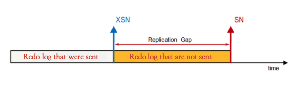

Connection Failure
There may be a case when the DB cannot be accessed while the server or Altibase process is running normally. There can be five types of situations like this:
Type | Description
|
User account restrictions | The following types of error logs can be recorded in $ALTIBASE_HOME/altibase_boot.log when a connection exceeding the number of file descriptors is attempted during the setup of the user account. |
ERR-01052(errno=24) Unable to invoke open() function on [~~~] | |
ERR-71016(errno=24) Failed to invoke a system function, accept() Dispatcher failed callback | |
Altibase Hang status | This refers to a case in which connection is disabled due to a system or Altibase problem, and there is no DB access or response, or no new access. |
Error in connection attempt | There may be cases in which the IP/Port number/Password of the server attempting to connect is incorrectly entered, and the lock status and TCP connection restrictions are set according to the password management policy. |
ERR-50032 : Client unable to establish a connection. | |
ERR-31010 : User not found | |
ERR-4102E : Invalid password | |
| ERR-31370 : The account is locked. | |
| ERR-410E3 : The user cannot connect using TCP. | |
Network failure | In case of problems with LAN card or network settings
|
Insufficient disk space | Cannot be used due to insufficient disk space |
ERR-01052(errno=24) Unable to invoke open() function on [~~~] | |
ERR-01052(errno=24) Unable to invoke write() function on [~~~] |
Among the five types described above, the following four are user or hardware failures. First, check the following items.
Type | Checklist
|
User account restrictions | The user account restrictions can be resolved by checking the result of limit -n, increasing this value, and restarting Altibase. Generally, it is recommended to set the file descriptor value to unlimited, and it should be set to at least 4096.
|
Error in connection attempt | If there is an error in the connection attempt, the configuration part must be checked in which the connection is attempted. Check whether the entered use account and password or the IP address to connect are entered incorrectly, and whether a value different from PORT_NO set in $ALTIBASE/conf/altibase.properties is not attempted.
|
Network failure | It is necessary to first check whether pack errors occur with netstat, and to check whether normal ftp/telnet connection from other devices to the drive where Altibase is installed is possible, and that there is no significant performance degradation in packet transmission and reception.
|
Insufficient disk space | Check the disk usage by using a command such as df (bdf), and then replenish insufficient disk space. |
The situation in which the system or Altibase Hang is questionable means that the Altibase process normally exists, but the connection attempt fails and there is no response to the previously connected DB session.
In this case, immediately collect the following information and request technical support from Altibase.
OS | Hang information acquisition method |
SUN | /usr/sbin/pstack –F process_id > 1.txt |
HP | This is not supported by PA_RISC, but IA series execute as follows. |
AIX | /usr/bin/procstack –F process_id > 1.txt |
Linux | If the kernel version is low, the command may not exist. |
Commands such as pstack show what status all threads of the process with specified process-id are currently in. Therefore, this can be used as important information to solve the problem.
(Similar to urgent failure, the system log and the Altibase trace log should be sent together.)
Failure due to insufficient resources
Resources include all of the logical space used by Altibase from physical memory/disk space. This section describes how to respond to each situation that may occur during the operation.
Insufficient tablespace
Type | Diagnostic method |
Insufficient memory tablespace | If the memory tablespace is insufficient, the following error occurs. [ERR-110F1 : Unable to extend the tablespace(XXXXX) because the current size of tablespace(4194304K) |
Insufficient disk tablespace | If the disk tablespace is insufficient, the following error occurs. [ERR-11123 : The tablespace does not have enough free space ( TBS Name :XXXXX ).] |
Since Altibase supports both memory/disk DB, the user must monitor each usage. If the above error occurs due to unexpected insufficient of tablespace, take the following actions.
Type | Method |
Insufficient user memory tablespace | ALTER TABLESPACE [tablespace name] ALTER AUTOEXTEND OFF ; ALTER TABLESPACE [tablespace name] ALTER AUTOEXTEND ON MAXSIZE 1G ;
Execute the above commands in order. |
Insufficient SYS_TBS_MEM_DATA/SYS_TBS_MEM_DIC tablespace or If it cannot be resolved with the ALTER TABLESPACE command. | If the above error occurs in the SYS_TBS_MEM_DATA/SYS_TBS_MEM_DIC tablespace, it cannot be solved with the above method.
DELETE FROM [table name] ; TRUNCATE TABLE [table name] ; ALTER TABLE [table name] COMPACT ; |
Insufficient disk tablespace | ALTER TABLESPACE [tablespace name] ADD DATAFILE 'abcd.dbf' SIZE 1G AUTOEXTEND OFF ;
Since the tablespace name is specified when an error message displays earlier, specify the tablespace name. |
The correct method for an error due to insufficient tablespace is an urgent method, and it is necessary to check if the tablespace suddenly increases for some reason afterward. The user must check the usage of DBMS objects belonging to each tablespace, check the changed details, and remove the cause.
The usage of each object in the tablespace is described in detail in the "Altibase Monitoring Query Guide".
Insufficient physical disk space
If the physical disk is insufficient, the DB status may seem like Hang because online log files that are essential for transaction processing cannot be recorded. In addition, there may not be any error message in the trace log because there are cases in which the Altibase trace log cannot be recorded due to insufficient space. Therefore, the user must periodically monitor the capacity of the physical disk. If a problem occurs, there is no way to do anything other than to free up space on the disk.
Insufficient physical memory space
In case of insufficient memory, there is no separate countermeasure during the service. However, it is recommended to periodically collect the following results because the current status must be acquired.
SET LINESIZE 1000 SELECT * FROM V$MEMSTAT ORDER BY MAX_TOTAL_SIZE DESC ; |
The above query shows the current usage status of memory resources inside Altibase. With this information, it is possible to compare and analyze which module has a large memory increase with a periodic result log. (Comparison of results of the previous day/same day)
Impact of performing bulk change operation or long-running queries
Altibase supports MVCC. MVCC is a technique that can improve the performance of DBMS itself by preventing waiting between inquiry/change transactions. (For more detailed information, please refer to the "Altibase MVCC & GC Guide".) According to the implementation of MVCC, there are data to be deleted called Garage Data. If there is a large amount of data to be deleted or queries with a long-running time, the data to be deleted cannot be deleted until the corresponding transaction is completed. As a result, an increase in online log files or an increase in physical memory may occur. Queries with a long-running time that cause this phenomenon can be checked as follows.
SELECT *
FROM V$STATEMENT
WHERE TOTAL_TIME > 100000000
AND EXECUTE_FLAG = 1
;
This query retrieves queries that are currently being executed and execution time is more than 100 seconds.
SELECT SESSION_ID,
ID,
RPAD(QUERY, 150)
FROM V$STATEMENT
WHERE TX_ID = (SELECT ID
FROM V$TRANSACTION
WHERE MEMORY_VIEW_SCN IN (SELECT MINMEMSCNINTXS
FROM V$MEMGC
LIMIT 1))
;
This query retrieves queries that have been executing for a long time to prevent the processing of the data to be deleted. |
For more detailed information, please refer to the "Altibase Monitoring Query Guide".
Failure due to system problems
This section describes the type of error due to insufficient system resources.
Error type | Description |
Out of memory | Insufficient memory
|
Resource busy | Temporary unable to access system resources
|
Too many open files | When the limit on the number of files that can be accessed at the same time is exceeded
|
No space left on device | Insufficient disk space |
If the above error types occur as a cause in the Altibase trace log, there are cases where the system error code is also recorded when an error message is recorded. It is also possible to check whether insufficient system resources occur with the corresponding system error code.
In addition, check the following logs to see if an error has occurred in the system.
OS | System log to check
|
SUN | /var/adm/message file |
HP | /var/adm/syslog/syslog.log file |
AIX | errpt -a |
Linux | /var/log/message file |
Replication Failure
Altibase provides a data replication method using TCP/IP network for high availability. If there is any delay or other error during the service with replication, take the following actions.
Type | Description |
Replication sender/receiver problem | Sender/Receiver does not operate normally due to network error or replication setting error
|
Occurrence of data conflict | When data cannot be replicated because the data values in the DB between both ends are different |
Check the following replication Sender/Receiver problems.
Type | Method |
Existence of Sender | SELECT COUNT(*) FROM V$REPSENDER ;
If the Sender is running normally, the result of the above query should be displayed as "1" or higher. |
Existence of Receiver | SELECT COUNT(*) FROM V$REPRECEIVER ;
If the Receiver is running normally, the result of the above query should be displayed as "1" or higher. (Must exist as many as the number of redundant objects) |
Among the Altibase trace logs, various messages related to replication are recorded in "altibase_rp.log".
Message when replication is running normally. [Recovery Sender] Replication REP1 Start... at [6030857] (Log of the Server that started replication) |
The problem of replication Sender/Receiver should be analyzed whether it was the execution of the user's intended command at the time the error was recorded or due to a network failure. If that status does not change even with repeated replication restart commands, immediately request technical support from Altibase Technical Headquarters.
The problem that will be caused in the replication Sender/Receiver is that the data to be sent with replication cannot be sent, and data is changed. Therefore, it is necessary to monitor the status of the replication Sender, which is called the replication gap.
SELECT REP_NAME,
REP_GAP
FROM V$REPGAP
;
REP_NAME REP_GAP
------------------------------------------------------------------
REP1 0
1 row selected.
|
REP_NAME refers to the object name of the replication, and the size from the log record currently being sent by REP_GAP to the last log record that has not been sent yet (default in MB).
※ REP_GAP of Altibase version 6.5.1 or lower is as follows. Calculate with online log file serial number SN (Sequence Number) and XSN REP_GAP(Replicaiton Gap) = [Latest SN of local SERVER]-[Latest XSN of local SERVER] |
This value is close to zero(0) and shows a continuous changing value. However, if this value increases continuously, it can be estimated that there is a problem in Sender/Receiver, so replication of each server and the network must be checked.
Data conflict due to replication can be checked in "altibase_rp.log" or "altibase_rp_conflict.log" depending on the configuration.
In case of PK crash due to INSERT DML (Dup Error) |
Except for the type of INSERT, output messages are recorded in the form of two errors each for one error. Additionally, since the SQL statement log is recorded for each type of data conflict by which SQL statement, it can be important information to find the corresponding data. The reason for such a phenomenon occurs is that the original data is incorrect or that the replication server attempts to change data is having the same PK without distinction. Therefore, it is necessary to carefully review the execution form of the application based on the SQL information.
{kind=link}